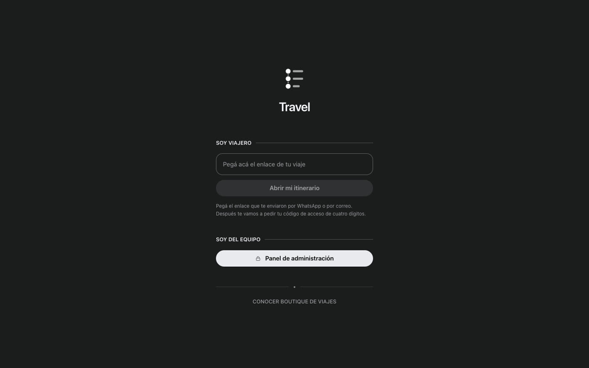
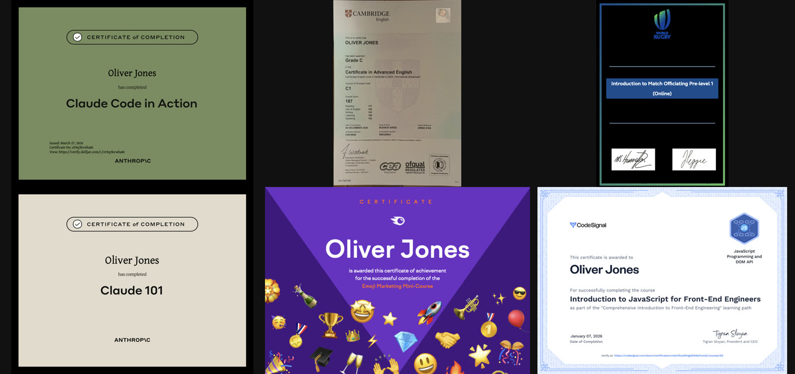
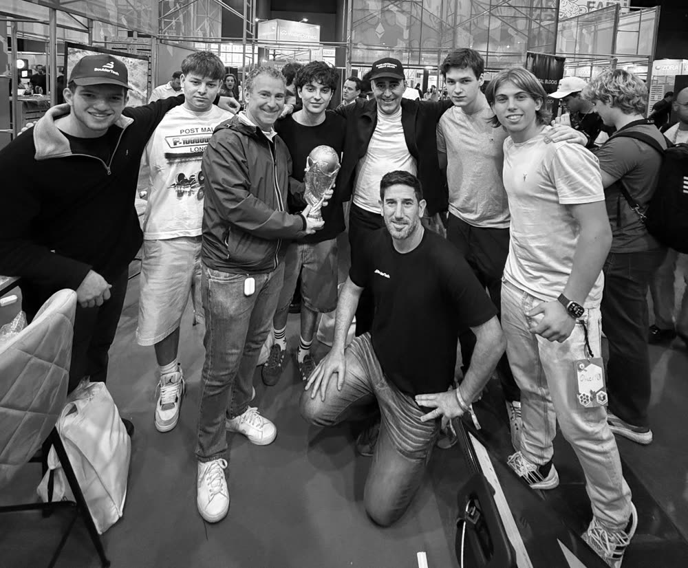
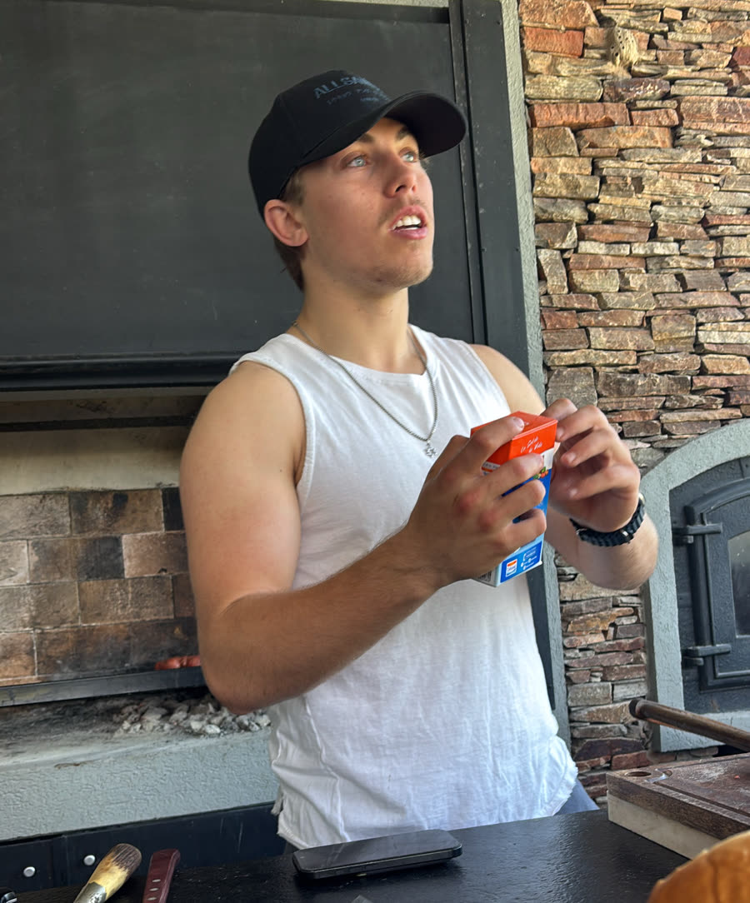

01
curious
curioso
I want to know how everything works, even reverse-engineering a humanoid robot's control API.
CV — 2026
curioso, empático,
inquieto.
Student · Builder · Rugby player
Scroll
Buenos Aires — Argentina
01 / About
I'm Oliver. I'm in my 5th year of the TIC orientation at ORT Argentina, and I build software for real people: restaurants, my mom's travel agency, my dad's real-estate studio, and a humanoid robot.
Since I was 4 I've played rugby as a hooker at BACRC. I like to know how everything works.
Building something right now
02 / Who I am
Scroll down, it moves sideways. And it ends.
01 — 05
03 / Built

My venture
Full-stack platform to run restaurants: QR menu, orders paid with Mercado Pago, kitchen and counter, analytics. Plus the launch campaigns (BIBIS, Poke & Roll Núñez).
Next.js · PostgreSQL · Marketing

For my mom
Platform for her travel agency. The agency builds the itinerary; the traveler opens it on the phone with a link and a PIN. Maps, offline mode, AI that imports PDFs.
Next.js 16 · Supabase · Claude AI

For my dad · Estudio Jones
Argentine real-estate platform: know the full cost (deed, fees, permits, construction) before you buy, build, renovate or rent.
Next.js 16 · Drizzle · Supabase
ORT final project
An embodiment layer for LLMs: it gives Claude a Unitree G1 humanoid body. The same code drives the simulator and the real robot.
SvelteKit · Python · ROS 2 · MCP
Also: Jones Cloud (a home cloud that replaces iCloud for my family) · personal website · lifetracker · openforum · ConstructAI · cheatsheets
04 / Sport
Front row, middle of the scrum, I throw into the lineout. Buenos Aires Cricket & Rugby Club.
Also
World Rugby certificates
Player: intro, front-row accreditation, concussion, anti-doping
Referee: Pre-Level 1, Rugby Ready, Safeguarding, concussion
 englandrugby
Posted on Instagram · Buenos Aires
englandrugby
Posted on Instagram · Buenos Aires
05 / School
8.59
Overall average · ORT Argentina · TIC · 5th year

Organized the Diseñahackathon
Finalist, with an essay · diploma
Qualified for the final (Zona 1A)
Drafted a bill on AI in education
C3PO, a humanoid robot Claude can control
A prize every year, mostly All-Round Excellence

06 / Learning



07 / World
Native
C1 · Cambridge Advanced
A little
I can read a lot
08 / Off the clock
Dream: being part of a special forces unit.

GitHub
[ your GitHub ]